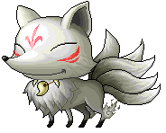
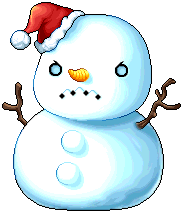

메이플랜드 마스터 몬스터는 2026년 3월에 추가된 지역별 강화 필드보스 16종입니다. 핵심은 '어디서 나오고 뭘 떨구느냐'인데요. 마노(Lv20)부터 레비아탄(Lv120)까지 16종의 출현 위치·레벨과, 마스터리북·100제 장비 같은 알짜 드랍을 한 표에 정리했습니다.
마스터 몬스터는 2026년 3월 20일 패치로 추가된, 각 사냥터의 '최고 단계' 강화 몬스터입니다. 같은 맵의 일반 몹보다 훨씬 세고 HP가 높으며, 정해진 위치에 등장해 처치하면 일반 사냥보다 좋은 보상(주문서·고급 장비·마스터리북 등)을 기대할 수 있습니다. 관련 의뢰 퀘스트도 함께 들어와서, 마을 NPC가 스토리와 함께 토벌을 부탁합니다.
한 가지 특징은 잡몹을 소환하는 패턴이 있다는 점입니다. 이후 밸런스 패치로 한 번에 소환하는 몬스터가 최대 10마리로 조정됐는데요. 그래서 마스터 몹을 잡을 때는 딸려 나오는 소환 몹 정리도 같이 신경 써야 합니다.
• • •
레벨과 출현 지역은 아래 표대로입니다. 대부분 해당 지역 사냥 동선 끝쪽 맵에 자리 잡고 있어, 그 맵을 기준으로 찾으면 됩니다.
| 이름 | Lv | 출현 지역(세부 맵) |
|---|---|---|
| 마노 | 20 | 리스 항구 (해안가 풀숲3) |
| 스텀피 | 35 | 페리온 (동쪽 바위산5) |
| 데우 | 38 | 니할 사막 (로얄 카투스 사막) |
| 세르프 | 45 | 아쿠아로드 (바다 해초 탑) |
| 파우스트 | 50 | 엘리니아 (사악한 기운의 숲1·2) |
| 킹크랑 | 55 | 플로리나 비치 (따뜻한 모래밭) |
| 타이머 | 59 | 루디브리엄 (잃어버린 시간1·2) |
| 다일 | 65 | 커닝시티 (위험한 크로코1) |
| 제노 | 65 | 지구방위본부 (그레이의 초원) |
| 구미호 | 70 | 아랫마을 (달 고개) |
| 태륜 | 71 | 무릉 (떠돌이 곰의 영토) |
| 요괴선사 | 77 | 무릉 (요괴의 숲2) |
| 엘리쟈 | 83 | 오르비스 (하늘 계단2) |
| 키메라 | 85 | 마가티아 (연구소 지하 비밀통로) |
| 스노우맨 | 90 | 엘나스 (설인의 골짜기) |
| 레비아탄 | 120 | 미나르 숲 (리프레) |


아랫마을의 구미호(좌), 엘나스의 스노우맨(우). 마스터 몹은 해당 몬스터의 강화 필드보스 버전입니다.
이미지: 메이플스토리 게임 자료(maplestory.io)
• • •
16종 중에서도 보상 때문에 사람이 몰리는 마스터 몹이 있습니다. 아래는 드랍이 확인된 대표 몹들인데요. 단, 드랍 목록과 확률은 DB·커뮤니티 기준이라 패치·버전에 따라 다를 수 있으니 정확한 건 인게임에서 확인하시는 게 안전합니다.
| 마스터 몹 | 눈여겨볼 드랍 |
|---|---|
| 레비아탄 (Lv120) | 마스터리북(스탠스·체인라이트닝·페럴라이즈·폭풍의 시 등), 100제 고급 장비, 마법·소환의 돌. HP가 1,300만대로 알려진 최상위 |
| 스노우맨 (Lv90) | 혼돈의 주문서 60%, 완드·스태프 마공 주문서, 망토 지력 60% 등 |
| 구미호 (Lv70) | 구미호·삼미호의 꼬리, 동물의 가죽, 장비·주문서 다종, 희귀 원석 |
| 파우스트 (Lv50) | 장비 다종(구룡도·쏜즈 등), 주문서 여러 종, 사파이어·오리할콘 원석 |
| 세르프 (Lv45) | 귀고리·망토·신발·장갑 등 능력치 60% 장비 다수 |
| 데우 (Lv38) | 두손검·석궁 공격력 60%, 망토 물방·체력 60% 주문서 |
정리하면 이렇습니다. ①위치는 해당 지역 사냥 동선 끝쪽 맵을 보면 됩니다(예: 마노=해안가 풀숲3, 파우스트=사악한 기운의 숲). ②리젠 시간은 공식적으로 공개되지 않아, 잡힌 직후라면 대기가 필요합니다. ③소환 몹이 최대 10마리까지 딸려 나오니 광역기·정리 동선을 준비하세요. ④난이도는 저레벨대(마노·스텀피·데우)는 권장 레벨이면 솔로 도전이 무난하지만, 구미호 이상 특히 레비아탄은 HP가 매우 높아 파티·원정이 안전합니다.
마스터 몬스터는 2026년 3월 추가된 지역별 강화 필드보스 16종(Lv20 마노 ~ Lv120 레비아탄)으로, 위치는 사냥 동선 끝쪽·리젠은 공식 미공개·소환 몹 최대 10마리가 핵심입니다. 보상은 레비아탄(마스터리북·100제)이 단연 인기이고, 드랍 세부는 패치·버전에 따라 다를 수 있어 인게임 확인을 권합니다.
마스터 몬스터는 위치만 알면 사냥 동선에 끼워 넣기 좋고, 레비아탄처럼 보상이 큰 몹은 따로 파티를 맞춰 도는 재미가 있습니다. 본인 레벨대에 맞는 마스터 몹부터 챙겨 보시길 바라며, 마스터 몬스터 정리는 여기까지 하겠습니다.